Soft chameleon, color-change progress metaphor, tiny route details, app-like Practice integration.
Video-Informed Mascot Concepts
A second-pass mascot board after transcribing the four referenced videos. The direction shifts from static mascot art toward a small emotional feedback system for Practice: softer chameleon, clear motion states, careful empty/completion moments, and alternate species only as comparison.
Make the mascot less reptile-realistic and more plush, with reusable emotion states before animation.
Costumes, XP/streak pressure, big reward panels, bottom-chrome mascot placement, sensitive-context mascots.
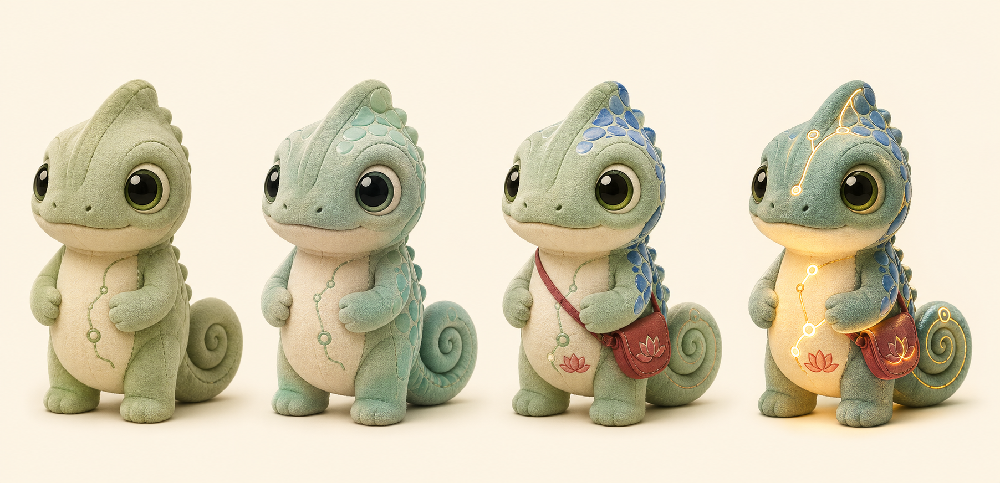
The Big Shift
The videos argue that mascots work when they become a recognizable emotional layer, not when they are decorative. For SpeakLocal, that means the chameleon should react quietly to practice moments and make empty/completion states memorable.
The mascot should be motion-ready: same canvas, same scale, stable silhouette, and a small state set that can later become SwiftUI animations.
Chameleon System
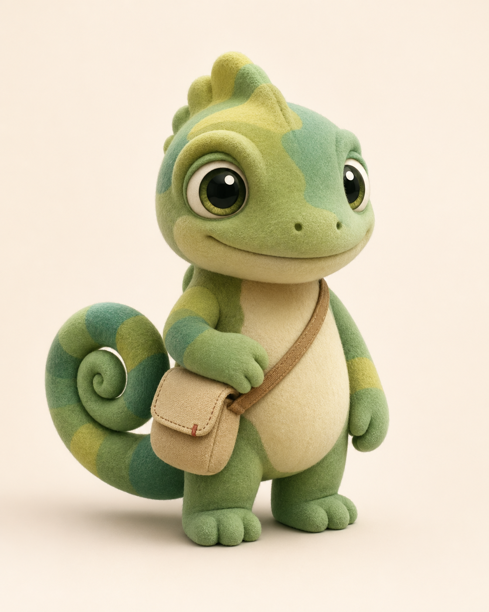
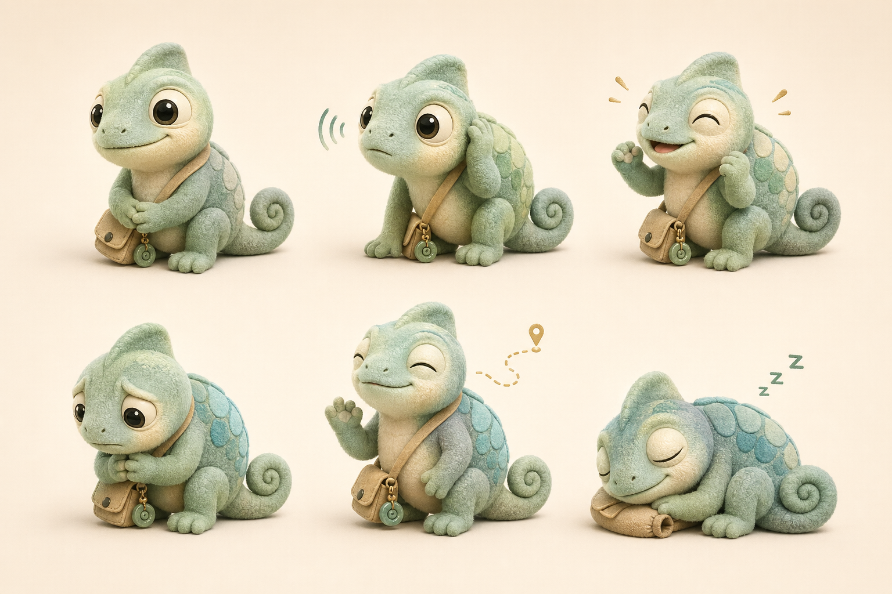
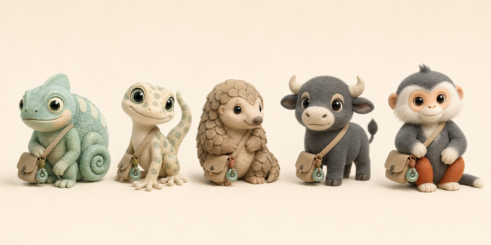
Native App Use
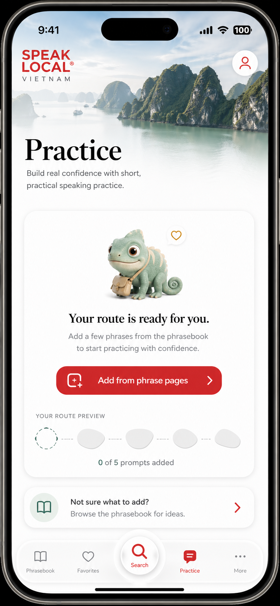
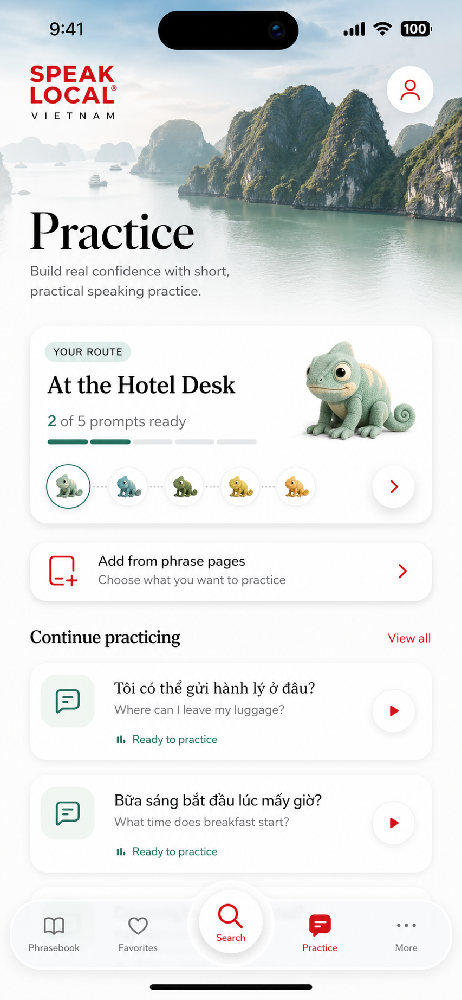
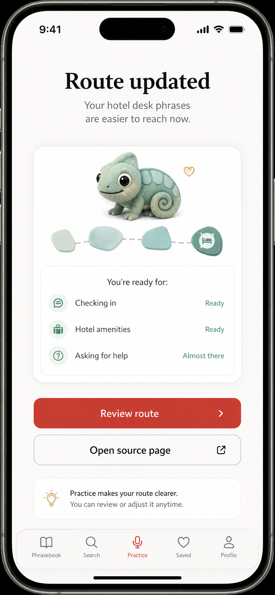
Animal Alternatives
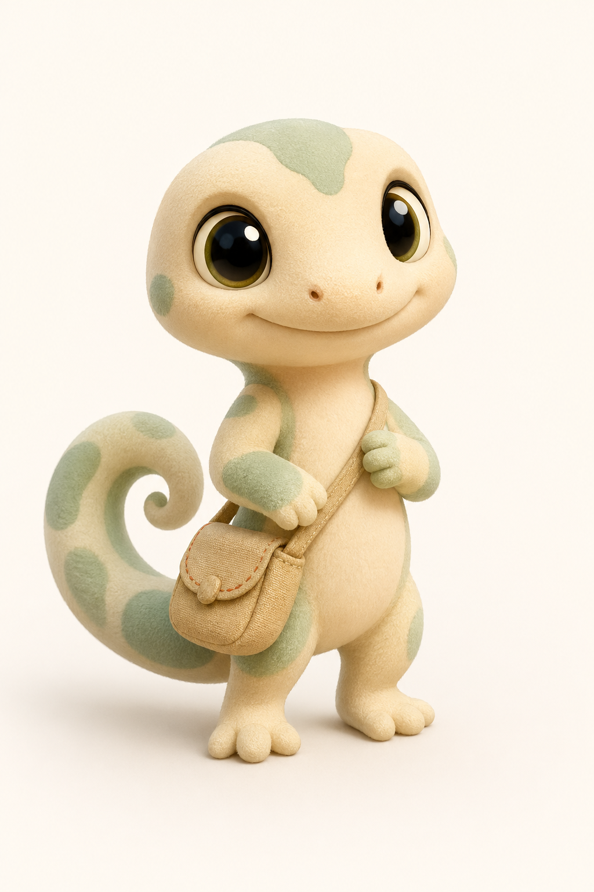
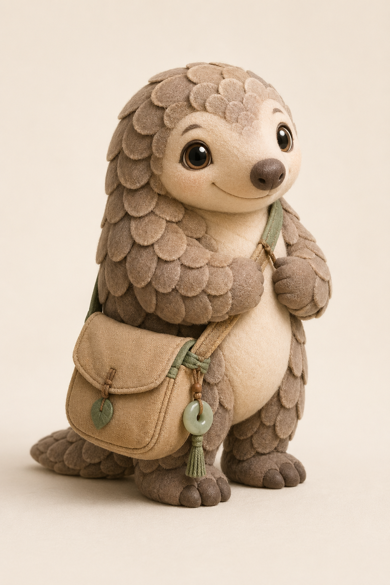
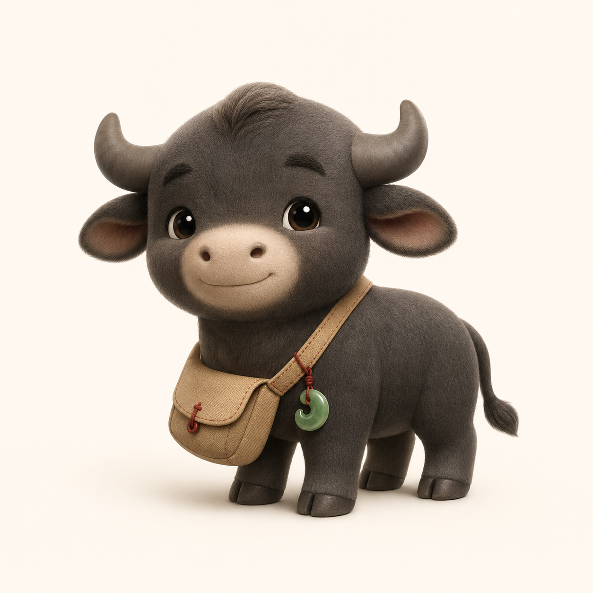
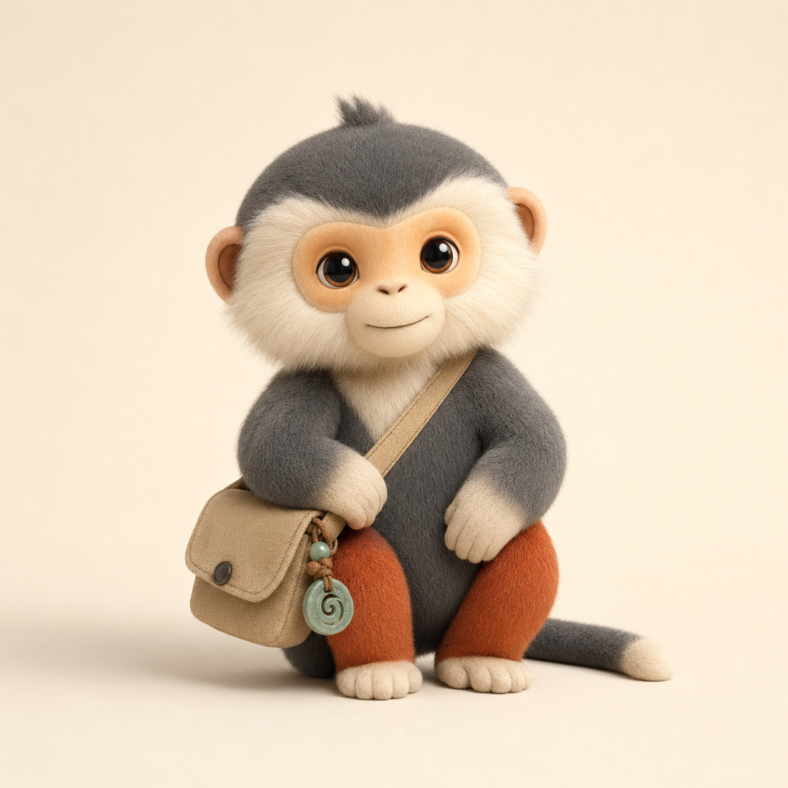
Read the full notes in README.md. Full local working transcripts are under tmp/mascot-youtube-research/transcripts/full/.